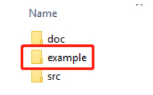
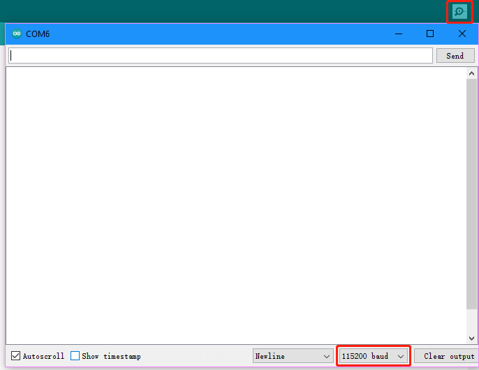
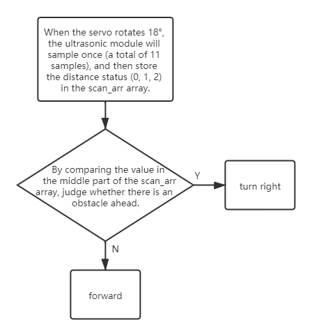
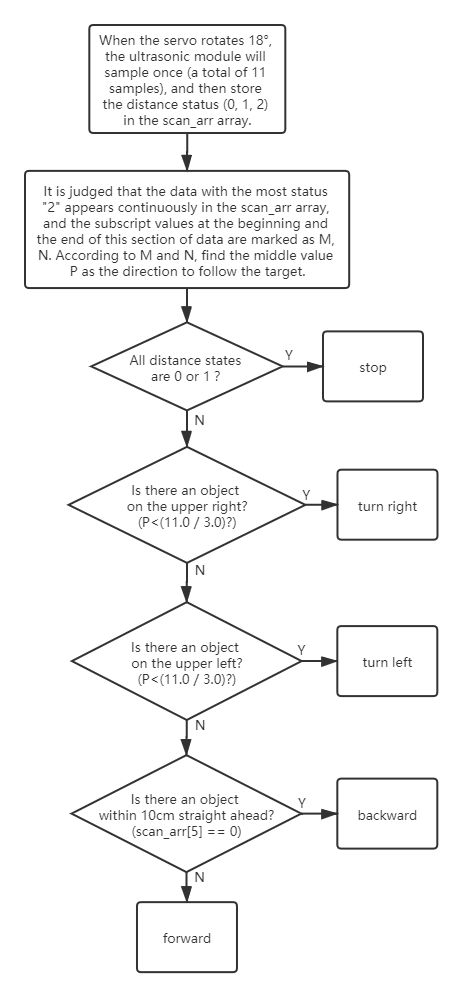
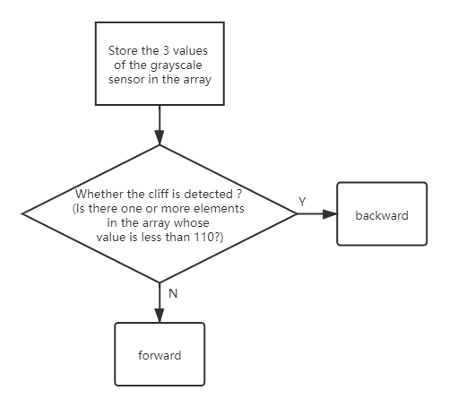
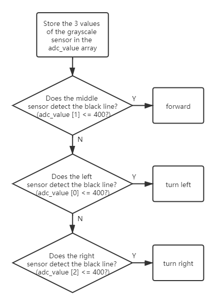

Code Control¶
In this chapter, we are provided with method of arduino control. Open esp-4wdArduinoexample, you can see a total of 7 code examples, you can use these 7 examples to quickly get started using the ESP-4WD Car.
{kind=link}
move¶
Open the 1.move.ino file with arduino, After running this example, the car will go forward 1s, go backward 1s, turn left 1s, turn right 1s at 30% speed, and finally stop.
#include "ESP32_RDP.h"
ESP32car car;
void setup() {
car.move("forward", 30);
delay(1000);
car.move("backward", 30);
delay(1000);
car.move("left", 30);
delay(1000);
car.move("right", 30);
delay(1000);
car.move("stop");
}
void loop() {
}
ultrasonic¶
Run 2.ultrasonic.ino, the serial port of arduino will always print the distance value read by the ultrasonic module.
#include "ESP32_RDP.h"
Ultrasonic ult(13,12);
float dis;
void setup() {
Serial.begin(115200);
}
void loop() {
dis = ult.read_distance();
Serial.printf("distance: %.2f \n",dis);
delay(100);
}
Click the icon in the upper right corner to open the serial debugging assistant, Set the baud rate to 115200.
{kind=link}
grayValue¶
Run 3.grayValue.ino, the serial port of arduino will always print the reading value of the grayscale sensor.
#include "ESP32_RDP.h"
ESP32car car;
int grayValue[3] = {0};
void setup() {
Serial.begin(115200);
}
void loop() {
car.get_grayscale();
for (int i = 0; i < 3; i++) {
grayValue[i] = car.adc_value[i];
}
Serial.printf("grayValue:");
Serial.printf(" %d", grayValue[0]);
Serial.printf(" %d", grayValue[1]);
Serial.printf(" %d\n", grayValue[2]);
delay(100);
}
flashingLight¶
Run 4.flashingLight.ino, the RGB light under the car flashes every 0.5 seconds and changes color every time it flashes.
#include "ESP32_RDP.h"
ESP32car car;
void setup() {
}
void loop() {
car.set_light_color(random(255), random(255), random(255));
delay(500);
car.set_light_off();
delay(500);
}
waterfallLight¶
Run 5.waterfallLight.ino, the RGB lights under the car will gradually turn on from the first to the twenty-fourth, and then turn off from the end to the middle. After that, the RGB lights will turn on from the twenty-fourth to the first, and then turn off from the end to the middle.
#include "ESP32_RDP.h"
ESP32car car;
void setup() {
}
void loop() {
int red = random(255);
int green = random(255);
int blue = random(255);
for (int i = 0; i < 24; i++)
{
car.set_num_light(i, red, green, blue);
delay(20);
}
for (int i = 23; i > 11; i--)
{
int j = 23 - i;
car.set_num_light(i, 0, 0, 0);
car.set_num_light(j, 0, 0, 0);
delay(40);
}
for (int i = 23; i >= 0; i--)
{
car.set_num_light(i, red, green, blue);
delay(20);
}
for (int i = 23; i > 11; i--)
{
int j = 23 - i;
car.set_num_light(i, 0, 0, 0);
car.set_num_light(j, 0, 0, 0);
delay(40);
}
}
The sentence to light up the LED is car.set_num_light(i, red, green, blue); the first parameter is the number of the light, and the last three parameters are the RGB value. For example, car.set_num_light(4,255,0,0) means to make the No. 4 LED light up in red.
measureSpeed¶
Run 6.measureSpeed.ino, the car will move at a random speed, and the 2-ch Photo- interrupter Module will detect the speed of the car.
The light emitted from the transmitting end of the 2-ch Photo-interrupter Module to the receiving end will pass through the Encoding Disk (which has 20 holes). When the receiving end does not receive the light, it will send a “0” to the microcontroller, otherwise it will send a “1”.
This means that when a total of 20 “1”s are detected, the small wheel has turned one round (a distance of the wheel circumference has been traveled forward).
In the same way, we can detect the frequency of the “1” received by the microcontroller and calculate the speed of the trolley in cm/s.
#include "ESP32_RDP.h"
ESP32car car;
#define SPEED_PIN_LEFT 26
#define SPEED_PIN_RIGHT 25
hw_timer_t * timer = NULL;
volatile uint8_t left_Counter = 0;
volatile uint8_t right_Counter = 0;
int counter = 0;
float carSpeed = 0;
void on_left_Pin() {
left_Counter++;
}
void on_right_Pin() {
right_Counter++;
}
void IRAM_ATTR onTimer() {
counter = (left_Counter + right_Counter);
left_Counter = 0;
right_Counter = 0;
}
float get_speed() {
float value = 0;
value = float(counter) / 2.0 / 20.0 * 2.0 * 3.14 * 3.3;
return value;
}
void setup() {
Serial.begin(115200);
pinMode(SPEED_PIN_LEFT, INPUT);
attachInterrupt(SPEED_PIN_LEFT, on_left_Pin, RISING);
pinMode(SPEED_PIN_RIGHT, INPUT);
attachInterrupt(SPEED_PIN_RIGHT, on_right_Pin, RISING);
// Set 80 divider for prescaler (see ESP32 Technical Reference Manual for more
// info).
timer = timerBegin(2, 80, true);
// Attach onTimer function to our timer.
timerAttachInterrupt(timer, &onTimer, true);
// Set alarm to call onTimer function every second (value in microseconds).
// Repeat the alarm (third parameter)
timerAlarmWrite(timer, 1000000, true);
// Start an alarm
timerAlarmEnable(timer);
}
void loop() {
int speed = random(100);
car.move("forward", speed);
carSpeed = get_speed();
Serial.println(carSpeed);
delay(1000);
}
morePlay¶
Run 7.morePlay.ino, this example provides 4 ways to use ESP-4WD Car. You can switch between different modes by modifying the value of the mode variable.
#include "ESP32_RDP.h"
ESP32car car;
int mode = 1;
void setup() {
}
void loop() {
switch (mode)
{
case 1:
car.avoid(40, 30);
break;
case 2:
car.follow(40, 30);
break;
case 3:
car.is_on_edge(110);
break;
case 4:
car.track_line(400 , 50);
break;
}
}
Function Introduction¶
avoid()
Modify the value of the mode variable to 1 so that the default mode is set to obstacle avoidance. ESP-4WD Car will advance at 30% speed and return to the distance state according to whether there is an obstacle in front (if there is an obstacle within 10cm, return to the distance state 0, if there is an obstacle within 40cm, then return to the distance state 1, otherwise it will Return to distance status 2). If it encounters an obstacle, it will automatically turn right to avoid collision.
{kind=link}
follow()
Modify the value of the mode variable to 2 so that the default mode is set to follow. ESP-4WD Car will move forward at 30% speed and automatically follow objects within 40cm in front.
{kind=link}
cliff detection()
Modify the value of the mode variable to 3 so that the default mode is set to cliff detection. When ESP-4WD Car detects a cliff (a place where the grayscale sensor’s detection value is below 110), it will retreat a certain distance.
{kind=link}
track_line()
Modify the value of the mode variable to 4 so that the default mode is set to line patrol. The ESP-4WD Car moves along the black line on the white ground (where the grayscale sensor detection value is below 400).
{kind=link}